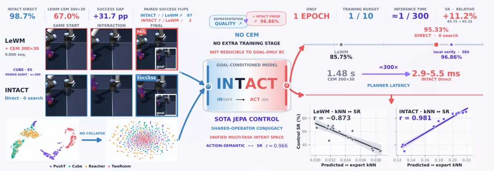
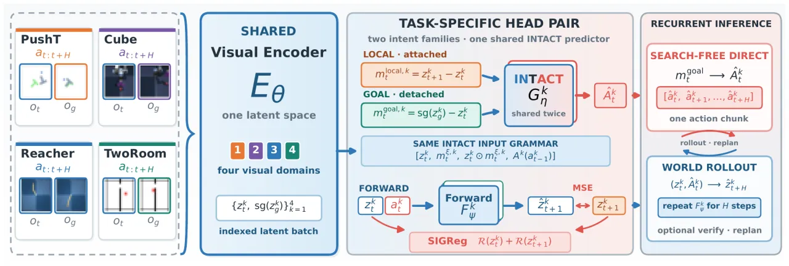
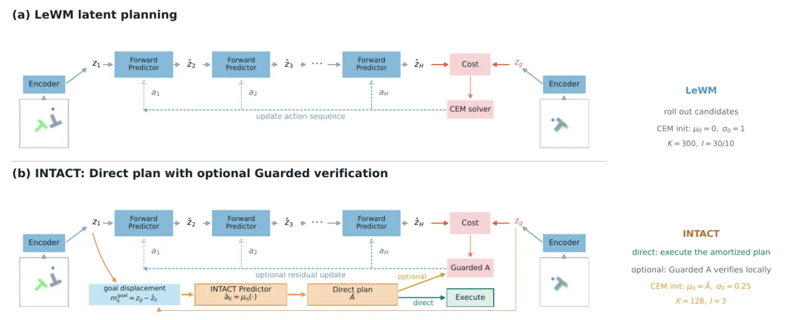
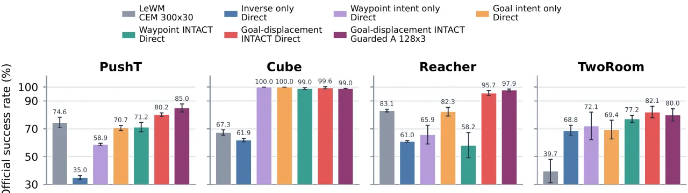
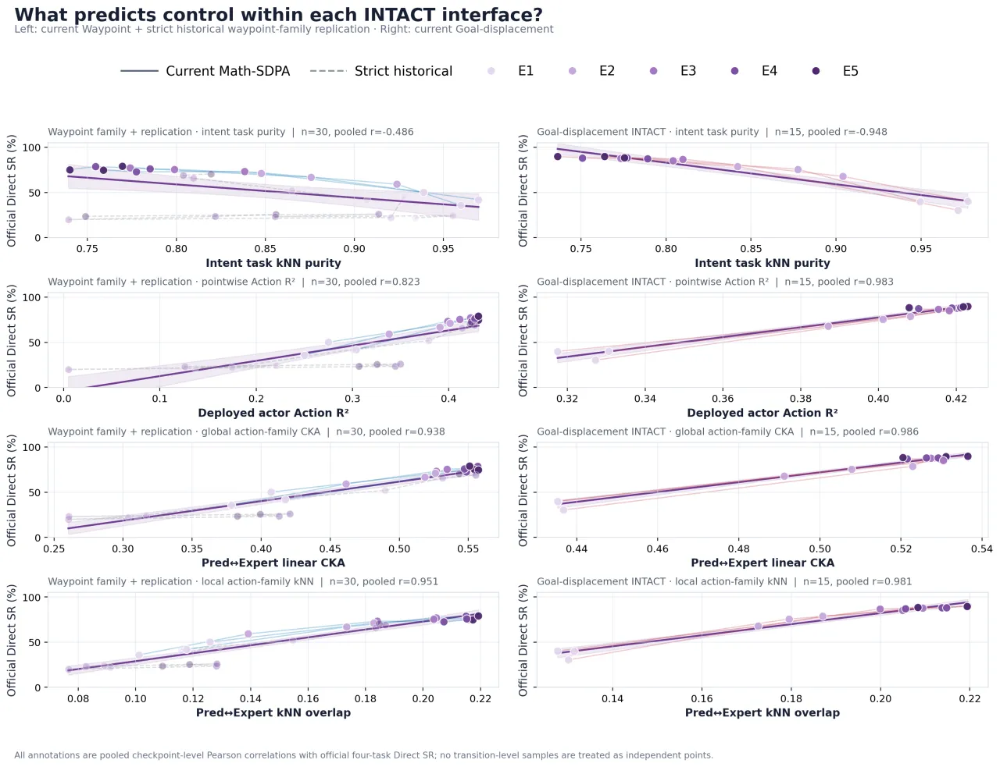

前向隐空间世界模型（forward latent world model）只会预测“动作会导致什么”，要反推“为达成目标该用哪个动作”却必须靠昂贵的测试期搜索（CEM/MPPI）。INTACT 是一个端到端 JEPA，把带动作标注、无奖励的离线轨迹直接转成可部署的 intent-to-action 接口：训练一个 epoch，其条件均值即可作为免搜索（search-free）策略直接输出动作，推理仅需 2.9–5.5 ms。
世界模型学的是一个前向条件：给定视觉状态与动作，预测下一步会发生什么。目标条件控制（goal-conditioned control）则要数值反演这个映射——不断采样动作序列、rollout、打分、保留接近目标的候选。论文指出这造成一种“表示—控制不对称”：动作在训练时塑造了隐空间，但 CEM/MPPI 在部署时却从无信息的随机/高斯动作起步，要反复 rollout 打分后才逐渐变得“朝向任务”。
“The world model learns what an action will do, but not which action should realize a requested latent change.” —— 世界模型知道动作会带来什么，却不知道该用哪个动作去实现所需的隐空间变化。
论文的核心观察：所需的监督信号其实本就藏在离线轨迹里。即使演示无序、训练无奖励，每一个带动作标注的 transition 都同时揭示了一个“状态条件下的运动意图（motion intent）”以及实现它的动作。跨大量轨迹，这些标注就勾勒出“意图族”与其对应的“动作族”。

INTACT（INtent-To-ACTion）是一个端到端 JEPA。每个 transition 提供物理意图（physical intent） zt+1 − zt；某个未来目标提供部署意图（deployment intent） sg(zg) − zt（sg 为 stop-gradient）。共享编码器给出 zj=Eθ(oj)，动作以 B=5 步为一 chunk、训练窗口跨 H=5 个 chunk。

论文对 isomorphic 给出两个明确含义：(1) local 与 goal 意图的 backbone 输入图同构——两者共用一套 four-slot grammar 与共享参数；(2) local 与 goal 意图族同构——由同一个 predictor 诱导的 action-law 语义把二者联系起来，而不是逐点隐空间相等（not pointwise latent equality）。也就是说，local 调用用物理后继来锚定表示，goal 调用把未来目标当作 anchor，两者靠“非对称端点梯度”联合起表示学习与控制。
名字里的 intact 指两种完好保留：(1) RGB 证据 → 隐空间意图坐标之间完好——端到端的动作梯度保留“动作有效（action-effective）”信息、同时过滤与运动意图无关的干扰；(2) 意图族 → 对应动作律族之间完好——共享 predictor 学到的是“被支持的族映射（supported family mapping）”。由此得到的意图坐标支撑一个稳健的分布式动作律（distributional action law）：其条件均值直接作为免搜索策略，而采样仅用于多样性或可选验证，并非目标导向控制所必需。

在 4 个官方 LeWM 域（PushT、OGBench Cube、DMC Reacher、TwoRoom）上评估。模型输入 RGB 观测与五步 action block；每个 checkpoint 用 seed {0,1,42} 各 100 episode 评估，主表 SR 沿用官方评估器。此外单独报告更严格的 CLEAR-LeWM v0.5.1 Moderate 审计（官方与 CLEAR 分数从不混合）。
单任务模型每个从头训练 1 个 epoch（batch 256，AdamW lr 5×10⁻⁴，三个训练种子）。下表为 goal-displacement INTACT 在各部署接口下的官方 SR（%），并与已发表方法对比：
| 方法 / 接口 | 候选序列数 | PushT | Cube | Reacher | TwoRoom | Macro |
|---|---|---|---|---|---|---|
| DINO-WM (published, CEM) | 9k | 74.0 | 86.0 | 79.0 | 100.0 | 84.75 |
| LeWM (E2E 10 ep, CEM) | 9k/3k | 96.0 | 74.0 | 86.0 | 87.0 | 85.75 |
| Fast-LeWM + SC (10 ep) | 9k | 98.0 | 82.0 | 90.0 | 98.0 | 92.00 |
| GC-IDM (LeWM + 50-ep head, Direct) | 0 | 84.7 | 99.3 | 100.0 | 100.0 | 96.00 |
| INTACT · Direct（1 ep, 零搜索） | 0 | 85.78 | 100.00 | 97.67 | 97.89 | 95.33 |
| INTACT · Pure CEM 300×30（禁用 actor） | 9k | 88.44 | 68.44 | 83.67 | 82.89 | 80.86 |
| INTACT · Actor-on CEM 300×30 | 9k | 93.56 | 96.89 | 86.67 | 98.00 | 93.78 |
| INTACT · Guarded A 128×3（局部验证） | 384 | 92.22 | 99.78 | 97.44 | 98.00 | 96.86 |
关键发现：花 9,000 条序列的 Actor-on CEM（93.78）反而比零搜索 Direct（95.33）低 1.55 点；而只用 384 条序列的 Guarded A 把 Direct 提高 1.53 点到 96.86。论文据此把搜索定位为“围绕已学计划的局部验证”，无约束的迭代搜索反而会重新制造 train–deployment gap、浪费已学到的条件律。相比已发表 LeWM，INTACT 只用约 1/10 的全数据遍历、并去掉最多 9,000 条候选序列。
一个分布式 job 遍历全部四个数据集，共享 ViT-Tiny/14 编码器、projector 与 192 维隐空间，各任务保留小的 Forward/INTACT Predictor（训练 5 epoch）。E5 时 goal-displacement INTACT 达到 89.39% macro Direct SR，而匹配的共享编码器 LeWM（CEM 300×30）仅 66.17，逐任务提升 5.66 / 32.23 / 12.56 / 42.44 点，并超过 85.75 的已发表 task-specific LeWM macro。

论文用一系列匹配干预把“表示塑造”与“读出执行”解耦：

受控多任务矩阵在六个目标 cell、三个训练种子、每 checkpoint 三个评估种子、E1–E5 下完整，官方 Direct / pure CEM / Guarded A / CLEAR Moderate 均有全覆盖；但作者指出“three seeds still provide only a coarse estimate of training variability”。
命题 Prop. 只对采样概率为正的端点条件成立，无法识别任意反事实目标；单条专家动作也不能证明另一个动作是否同样有效。在障碍、接触切换与多模态演示附近，full goal displacement 保留方向与距离但仍是近似请求；goal-intent 调用依赖演示支持，二者都不能证明支持集之外的正确行为。首步 Direct 之后，自回归控制会以预测隐状态为条件，其分布可能偏离编码的演示状态。
effective rank 与 SRS 可能奖励各向同性噪声；Gsep 只是 action-distinct quotient 的代理（两个不同目标可能需要同一当前动作）；expert NLL 与 Direct 共用同一 INTACT Predictor，因此不是独立的因果变量。t-SNE 几何仅为定性、不用于选型。
部署动作是对角高斯的均值；在岔口或接触切换处该均值可能落在两个有效模态之间。搜索可对照前向动力学验证，但会丢掉“零候选”身份。混合 actor、基于学习不确定性的采样、不确定性触发验证与 quotient-aware 模态选择是自然的扩展，但当前证据只支持一个简单的跨任务默认，而非普适动作分布。
基础 Full–goal-only 交换仅用两个训练种子；扩展的 72-cell 审计加强了因果对照，但未建立精确共轭或单一全局仿射图。LeWM / inverse-only backbone 也能被对齐进训练好的 Full actor，故“可对齐性”并非 INTACT 独有属性；跨任务与 leave-one-task-out 迁移仍失败。
实验用四个仿真任务、固定图像目标、任务专属动作头与离线专家轨迹，尚未建立真实机器人、分布外目标、干扰物或跨本体的泛化。头条结果用官方 LeWM 以保持可比性，更严格的合法性审计单独报告、且应被独立验证。对 PRISM、GC-IDM、SMWM、QuoVLA 等并行系统，论文只比较接口与假设，不比对未匹配的 SR 数字。